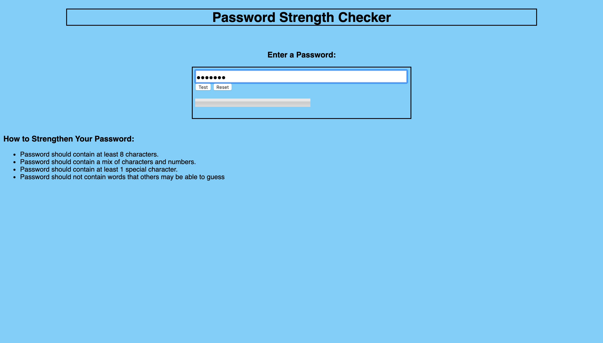
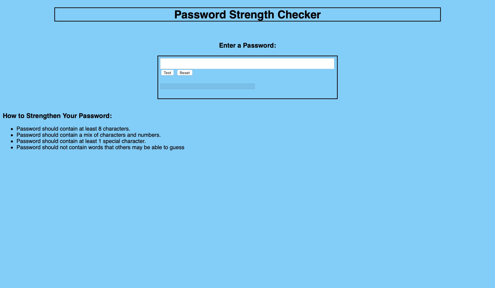
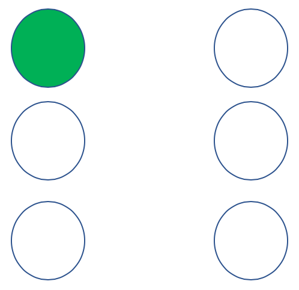
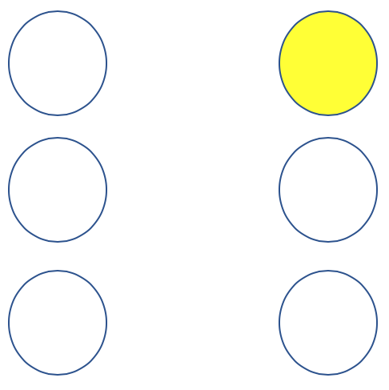
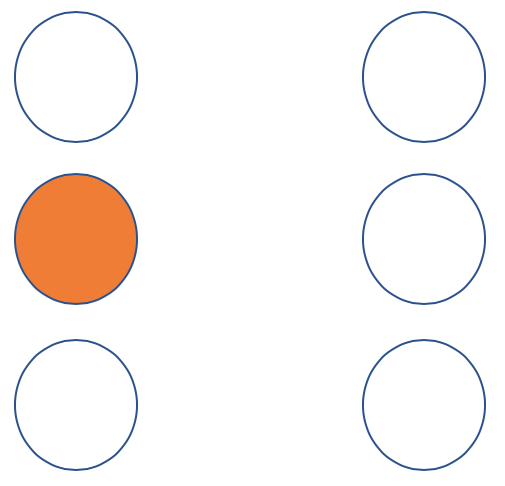
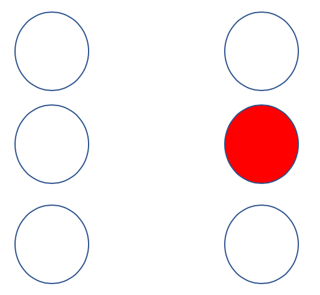
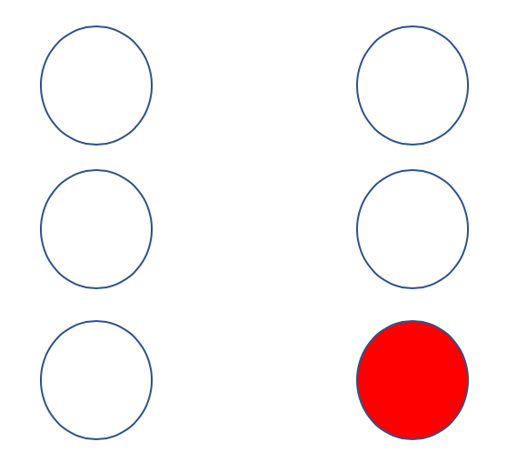

To My Website
Password Strength Checker
Etienne Brand
Etienne is currently studying Computer and Information Security at the University of Plymouth. Having had no previous programming or computing experience before starting his degree; Etienne has worked tireless at steadily improving his abilities. Etienne has a passion to make a difference in national security - and thus hopes to gain employment with GCHQ upon leaving university.
My Skills
Software Engineering
Web Design
Business Networking
LinkedIn Views
Instagram Follows
Months Exp.
Meetings
My Resources
- GitHub
- Web Design
- JavaScript
- HTML Design
- Software Engineering
-
SOFT166
Repository - Visit Repo
- Trello
- Things I Need to Do
- Things I'm Doing
- Things I've Done
-
Project Management
Kanban Board - Visit Board
Website Feedback
Ciara Whelan Medicine
"The fonts and colours of the application make it very pleasant to read and very understandable. The strength checker could perhaps be improved by directly informing the user how to achieve the more secure readouts."
Beth D'Arcy Biomedical Sciences
"Etienne's website is modern looking, with colours that work well together and are easy on the eyes. The website could be improved by adding visual aids that help show how the lights respond to the strength of passwords."
Application Working in Various Browsers
Application Running in Chrome
Application Running in Safari
Lights Info

The top-left light (Light ID = 1) will illuminate green when a secure password is entered.
The top-right light (Light ID = 4) will illuminate yellow when a strong password is entered.
The middle-left light (Light ID = 2) will illuminate orange when an average password is entered.
The middle-right light (Light ID = 5) will illuminate red when a weak password is entered.
The lower-right light (Light ID = 6) will illuminate red when too short a password is entered.
Index
About this Application
This application has been produced to fulfill the specification requirements for the practice element of the SOFT166 module. The application features several individual segments that are connected to the same overall page, with a fast-navigation panel for ease of use. The Password Strength Checker itself relies on an algorithm that checks for the complexity of the password based on whether it is alphanumeric or incorporates symbols; as well as the length. A strength score is calculated as an output of this algorithm, with certain strength scores assigned to be weak, average, strong or secure.
How I Responded to Feedback
During the development process of the application, an effort was made to obtain valuable feedback from
people that would be potential users of the application. In particular, feedback was
obtained from individuals who are not on computing courses, so that it can be ensured that lay-users can fully
understand and effectively use this application.
In particular, feedback from Ciara Whelan (Student of Medicine) was particularly helpful, as her advice led
to changes in the Password Strength Checker to provide direct feedback as to how the user can achieve a higher
classification of password strength.